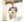

1、列清单 打包行李最担心的事情就是落下东西，行前列出一
个整理清单，根据清单上面的备注挨个整理，如果有遗漏的东西可
以随时发现。2、浴帽装鞋 浴帽很容易洗干净，所以装鞋子的时候
可以借用一下浴帽~3...
全球旅游攻略 标签: 打包 行李
我的香港情怀：每次去香港都会有一种莫名其妙的兴奋，也
许这是情怀，也许这是真的喜欢，无论香港变成怎么样，我都会一样
喜欢.每次发香港的作品到微博或者朋友圈，都会有很多声音说为
什么你老是怕香港，为什么那么...
李创ALEX 标签: 港片 香港